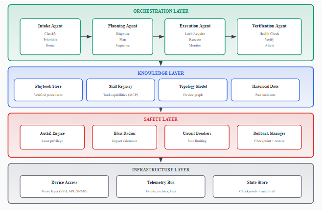
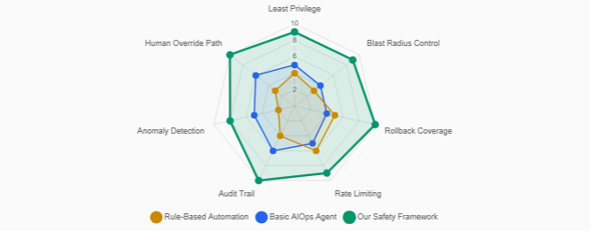
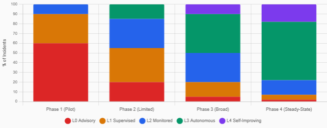
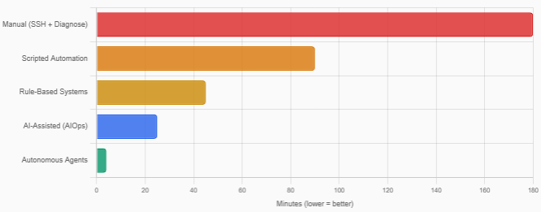
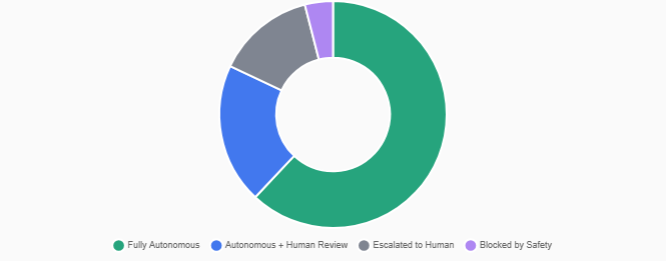
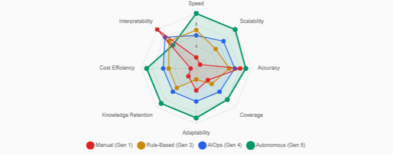

Introduction
The Operational Challenge at Hyperscale
Modern cloud providers operate network infrastructure spanning millions of devices across hundreds of data centers worldwide. This infrastructure generates a continuous stream of operational incidents: hardware failures, software bugs, configuration drift, capacity exhaustion, and cascading failures triggered by complex interdependencies.
Traditional operations models rely on human engineers (often called on-call engineers or Site Reliability Engineers) to investigate and resolve these incidents. However, this approach faces fundamental scalability limitations:
- Volume: The number of incidents grows linearly (or super-linearly) with infrastructure scale, while the engineering workforce cannot scale proportionally.
- Velocity: Network incidents can cascade within seconds, but human investigation and remediation cycles operate on timescales of minutes to hours.
- Complexity: Modern network architectures involve intricate dependencies between layers (physical, data link, network, transport, application), making root cause analysis a combinatorial challenge.
- Knowledge distribution: Operational expertise is often concentrated in a small number of senior engineers, creating knowledge bottlenecks and single points of failure.
From Automation to Autonomy
The industry has progressed through several generations of operational tooling:
- Manual operations: Engineers SSH into devices, run diagnostic commands, and apply remediations by hand.
- Scripted automation: Runbooks are codified into scripts that automate specific remediation steps, but still require human triggering.
- Rule-based automation: Event-driven systems apply predetermined actions when specific conditions match, limited to known failure modes.
- AI-assisted operations (AIOps): Machine learning models provide recommendations and anomaly detection, but humans remain in the loop.
- Autonomous operations: AI agents independently perceive the environment, reason about failures, plan remediation strategies, execute actions, and verify outcomes.
This paper presents an architecture for the fifth generation: progressively autonomous incident resolution using agentic AI systems with built-in safety guarantees and human oversight mechanisms.
Contributions
- An end-to-end architecture for progressively autonomous incident resolution using multi-agent orchestration.
- A skills-based tool architecture inspired by extensible agent runtimes (e.g., Model Context Protocol), enabling composable, governed operational capabilities.
- A structured knowledge encoding methodology for converting tribal operational knowledge into machine-executable playbooks.
- A progressive autonomy framework with automatic promotion and demotion mechanisms.
- Production deployment experience and lessons learned from operating autonomous AI agents at hyperscale.
Architecture

Agent Decomposition
The orchestration layer decomposes incident resolution into four specialized agent roles:
Intake Agent: The system's entry point, responsible for receiving raw incident signals and preparing them for automated processing. It classifies the incident type, assesses priority, enriches context with topology and history, and determines whether the incident falls within autonomous resolution capability.
Planning Agent: Receives enriched incident context and produces a structured remediation plan. It identifies the most likely root cause, selects appropriate remediation strategies, considers dependencies and ordering constraints, and generates a plan with explicit success criteria and abort conditions.
Execution Agent: Translates the structured plan into concrete actions against the infrastructure. It acquires device locks and authorization tokens, executes diagnostics, applies remediation actions sequentially, handles partial failures, and records all actions for auditability.
Verification Agent: Provides closed-loop assurance that the remediation was successful. It executes post-action health checks, compares device state against expected outcomes, monitors for regression, triggers rollback if verification fails, and updates the incident record with resolution evidence.
Skills-Based Tool Architecture
Each operational capability is encapsulated as a discrete, independently versioned skill with a well-defined interface. Inspired by extensible tool-use frameworks such as Model Context Protocol (MCP), each skill defines:
- Interface contract: A typed schema describing inputs, outputs, and error conditions.
- Capability declaration: A machine-readable description used by the planning agent during tool selection.
- Permission requirements: Minimum authorization scope, enforced by the safety layer.
- Idempotency guarantees: Whether repeated invocation produces the same result.
This architecture enables composability (agents chain multiple skills), extensibility (new capabilities added without modifying orchestration), and governance (each skill's blast radius is independently controlled).
Safety Framework
Operating AI agents autonomously on production infrastructure requires robust safety guarantees built on four principles:
- Least privilege: Agents are granted only the minimum permissions required for their current task.
- Blast radius containment: No single agent action can affect more than a bounded number of devices or services.
- Reversibility: All actions must be reversible, with automated rollback mechanisms.
- Progressive trust: Agent authority increases incrementally based on demonstrated reliability.

Progressive Autonomy
Organizations rarely transition directly from manual to fully autonomous. The architecture supports a spectrum of autonomy levels:
| Level | Name | Description |
|---|---|---|
| 0 | Advisory | Agent suggests actions; human executes |
| 1 | Supervised | Agent executes with human pre-approval |
| 2 | Monitored | Agent executes autonomously; human reviews post-hoc |
| 3 | Autonomous | Agent executes without human involvement for approved categories |
| 4 | Self-improving | Agent refines its own operational procedures based on outcomes |
Promotion between levels is based on quantifiable metrics: success rate, mean time to resolution, false positive rate, rollback frequency, and human override rate. The system includes automatic demotion via per-category and global circuit breakers.

Evaluation
The architecture has been deployed in a production cloud network serving millions of customers across geographically distributed data centers.
Resolution Effectiveness
- Autonomous resolution rate: Exceeding 90% for well-understood failure modes without human intervention.
- Resolution time improvement: Two orders of magnitude decrease, from hours to minutes.
- Accuracy: False positive remediation occurs in less than 5% of cases, with no customer-visible impact due to the safety framework.


Safety Performance
- Zero critical incidents: The safety framework prevented all potentially harmful actions from reaching production.
- Rollback effectiveness: Automatic rollbacks recovered within defined time bounds in all cases.
- Blast radius compliance: No autonomous action exceeded its predicted blast radius boundaries.

Lessons Learned
LLM Reliability in Safety-Critical Contexts
Large language models exhibit stochastic behavior at odds with determinism required for safety-critical operations. We address this through structured output enforcement, multi-model consensus for critical decisions, and deterministic verification of all LLM-generated plans before execution.
The Importance of Observability
Every decision by every agent is logged with full context. The system maintains causal links between observations, decisions, and outcomes, and generates human-readable explanations for each autonomous resolution suitable for engineering review.
Handling Novel Failures
Agents estimate confidence in diagnosis and remediation plans, escalating when confidence is low. Statistical methods identify incidents deviating from known patterns. When autonomous resolution isn't possible, the system still provides diagnostic enrichment to assist human operators.
Organizational Change Management
Trust building requires transparency and demonstrated reliability. The operational engineer role shifts from reactive incident response to system improvement and novel problem solving. Clear accountability frameworks must be defined for autonomous agent decisions.
Conclusion
This paper presented an agentic AI architecture for autonomous incident resolution in hyperscale network operations. The system demonstrates that multi-agent orchestration, combined with robust safety frameworks and progressive autonomy mechanisms, can achieve high autonomous resolution rates while maintaining safety guarantees required for critical infrastructure.
The transition from human-driven to autonomous operations is not merely a technology problem. It requires careful attention to knowledge management, organizational change, and trust building. We believe this architecture represents a significant step toward truly autonomous infrastructure operations.
📄 Full paper: arXiv:2606.09122 | 🔗 Companion paper: From Reactive to Autonomous: Evolution of AI Operations in Cloud Network Infrastructure